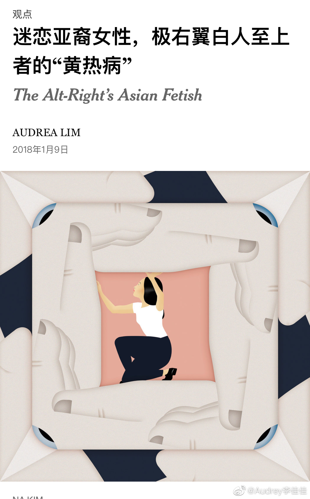

太多原博这种，别人被打大哭大闹，TA还能评论：那么嚎啕撒泼不够体面。//@王乐平Robbin：他们拿着放大镜警惕地盯着抗争者的一举一动: 不能骂人啊！你怎么动手啊？他这么做是不对，但你是不是也需要反思一下自己啊！你不能只反对这个人而不反对另一个人.你这么做和你反对的人有什么区别？...
@Audrey李佳佳:
在欧美文化中，以种族/肤色划分人群和阐述观点是非常敏感的事情，“某某种族就是棒”、“某某肤色都不行”是简单粗暴会被口诛笔伐的种族主义（racist）言论这是人尽皆知的常识。
所以觉得挺难想象“就喜欢欧美白人小伙子”、“白人xx大能力强床上尊重女性”、“亚裔（‘蝈蝻’）‘金针菇’脏丑不想看”之类的言论可以在我们的社交网络上备受追捧大行其道。
转换一下，我们很难想象一个白人女性大喊“我只爱白男人的大xx，其他种族男的恶心blahblah”，或者一个黑人女性宣称择偶只想要“欧美白男”，尽情鄙夷自己的种族。这两者都会立即被意识到是白人至上主义（white supremacy)，后者还包含了自恨（self-loathing）—— 即厌恶自己与生俱来的种族和肤色，仰视白人。
要注意，“白人至上”可不仅仅是三K党这些暴力极端才算，白人至上是打心眼里觉得白人天生得更优秀、更值得尊重、更高人一筹。
而白人至上的内核，是白人男性至上。
很多人觉得中国女性受到压迫，不受尊重，所以去攻击贬低同族男性、抬高白人男性很痛快，能有助平权。可是在全球公共事务维度，所有的demographics之中，白人男性是妥妥的金字塔顶端，他们享有的资源、造成的不平等不但压迫其本种族女性（白女），也当然压迫黑人男性、黑人女性、亚裔男性、亚裔女性。
白人至上主义的白人男性中相当一部分有“亚裔黄热病（Asian fetish）”，原本如此鄙夷其他族裔的他们，却觉得找个亚裔伴侣是一种勋章，为什么？
纽约时报曾发表过一篇专栏探讨这种现象——《迷恋亚裔女性，极右翼白人至上者的“黄热病”（The Alt-Right’s Asian Fetish）》。认为这基于两种针对种族的迷思或刻板印象：一是亚裔易被同化的所谓“模范少数族裔”观念；二是亚裔女性百依百顺、性欲强（subservient, hypersexual）的观念。这些白人至上主义者为此可以在“白人血统的纯正性上做出一些让步”。
亚裔女性真的希望自己独立、自强、受到尊重，当然要追求平等，不单是性别平等还有种族平等，以歧视反对歧视只能是南辕北辙，自我物化，仰视、附和、崇拜最具特权的那个群体对目标有百害而无一利。
所以觉得挺难想象“就喜欢欧美白人小伙子”、“白人xx大能力强床上尊重女性”、“亚裔（‘蝈蝻’）‘金针菇’脏丑不想看”之类的言论可以在我们的社交网络上备受追捧大行其道。
转换一下，我们很难想象一个白人女性大喊“我只爱白男人的大xx，其他种族男的恶心blahblah”，或者一个黑人女性宣称择偶只想要“欧美白男”，尽情鄙夷自己的种族。这两者都会立即被意识到是白人至上主义（white supremacy)，后者还包含了自恨（self-loathing）—— 即厌恶自己与生俱来的种族和肤色，仰视白人。
要注意，“白人至上”可不仅仅是三K党这些暴力极端才算，白人至上是打心眼里觉得白人天生得更优秀、更值得尊重、更高人一筹。
而白人至上的内核，是白人男性至上。
很多人觉得中国女性受到压迫，不受尊重，所以去攻击贬低同族男性、抬高白人男性很痛快，能有助平权。可是在全球公共事务维度，所有的demographics之中，白人男性是妥妥的金字塔顶端，他们享有的资源、造成的不平等不但压迫其本种族女性（白女），也当然压迫黑人男性、黑人女性、亚裔男性、亚裔女性。
白人至上主义的白人男性中相当一部分有“亚裔黄热病（Asian fetish）”，原本如此鄙夷其他族裔的他们，却觉得找个亚裔伴侣是一种勋章，为什么？
纽约时报曾发表过一篇专栏探讨这种现象——《迷恋亚裔女性，极右翼白人至上者的“黄热病”（The Alt-Right’s Asian Fetish）》。认为这基于两种针对种族的迷思或刻板印象：一是亚裔易被同化的所谓“模范少数族裔”观念；二是亚裔女性百依百顺、性欲强（subservient, hypersexual）的观念。这些白人至上主义者为此可以在“白人血统的纯正性上做出一些让步”。
亚裔女性真的希望自己独立、自强、受到尊重，当然要追求平等，不单是性别平等还有种族平等，以歧视反对歧视只能是南辕北辙，自我物化，仰视、附和、崇拜最具特权的那个群体对目标有百害而无一利。
- 